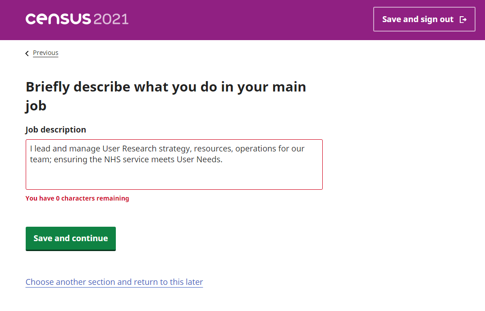

The full job description for the role I perform is something like 20 pages! To summarise this in 120 characters was a nightmarish task for the Census 2021.

Anyway to elaborate further - this post is inspired by me trying to explain briefly to my six year old what I do at work. “Listening to people” and “remote calls most of the day” didn’t seem much of an explanation!
I lead and manage User Research strategy, resources, operations for our team; ensuring the NHS service meets User Needs.
Lead
- Set a vision and direction for work within the team. Why are we here? What do we want to achieve this Sprint?
- Inspire colleagues and stakeholders - lead by example,
- Share our successes,
- Encourage the team to be brave,
- Asking the challenging questions,
- Empower and support the team, vFacilitate change within the team/service, identify and help improve anything else that could be better
Manage
- Ensure we have a plan! Manage a backlog of research requests. Scope, triage, and prioritise the requests with the team
- Manage our team (onboarding, well-being, performance, support, training, coaching, mentoring, timesheets, leave and absence, holidays, one to ones, etc.)
- Own the quality benchmark for the team. If things go wrong take some responsibility and learn from it
Strategy
- NHS.uk Service Standards!
- GDS Principles - Start with User Needs
- GDS Standard / Service lifecycle - Discovery, Alpha, Beta, Live
- Agile / Cynefin - identifying appropriate research methods to use for different (simple and complex) research projects
- Research ethics / best practice and principles
- Aligning priorities across multiple UR / UX / CX teams
Resources
- Ensure we have enough researchers, recruitment!
- Ensure research skills match the tasks at hand
- Coordinate the research budget / ensure appropriate spend
Operations
- Facilitating continuous improvement - e.g. Retros
- Agreeing processes / workflows across teams
- Ways of working & regular research cadence - UR a team sport!
- Quality assurance of research and outputs
- Ensuring correct research tooling, working with suppliers
- Data governance, GDPR
Service + User needs
- Facilitate the user voice and bringing empathy into the heart of the service
- Build a narrative around users’ stories and how this has changed over time
- Facilitating insights sharing among colleagues / stakeholders (Service design, interaction design, content design, product owners, stakeholders)
- Ensure the service is inclusive and meets access needs. And is technically compliant to WCAG 2.1 AA
- Plan for documenting insights / user needs
- Coordinate workflows for championing change, prioritising quick wins and longer term changes
- Monitoring Key Performance Indicators
- Keeping a record of positive outcomes (research completed, quick design wins and major service changes delivered)
And many many many other things!
Moving roles
I spent probably 75% of my time during the last 10 years delivering user research, identifying needs and improvements for products and services, the other 25% of my time on managing a small team or leading projects in the wider research community and re-ops space.
In some ways the lockdown and homeschooling situation really forced me to delegate most of my User Research work to the wider team; I was only fully available three days a week and often times had my kids running around the house so was often quite distracted, fairly stressed and sometimes unavailable to moderate research sessions.
I found the move to a Senior role refreshing and the change in focus initially challenging. As I really enjoy all the frontline research and hearing users talk about the thing, I really hope to continue observing regular research sessions and attend the (many) research playbacks too!
Importantly I need colleagues to remind me “not to worry about the details” as we now have an expanded team who manage and deliver the research activities. The processes we have work well and the team are brilliant, always deliver great insight, always improving things too.
If you are interested in learning more about what Senior User Researchers do I’m always happy to share more insight about this challenging and rewarding role. Please reach out on Twitter!
Tom :)